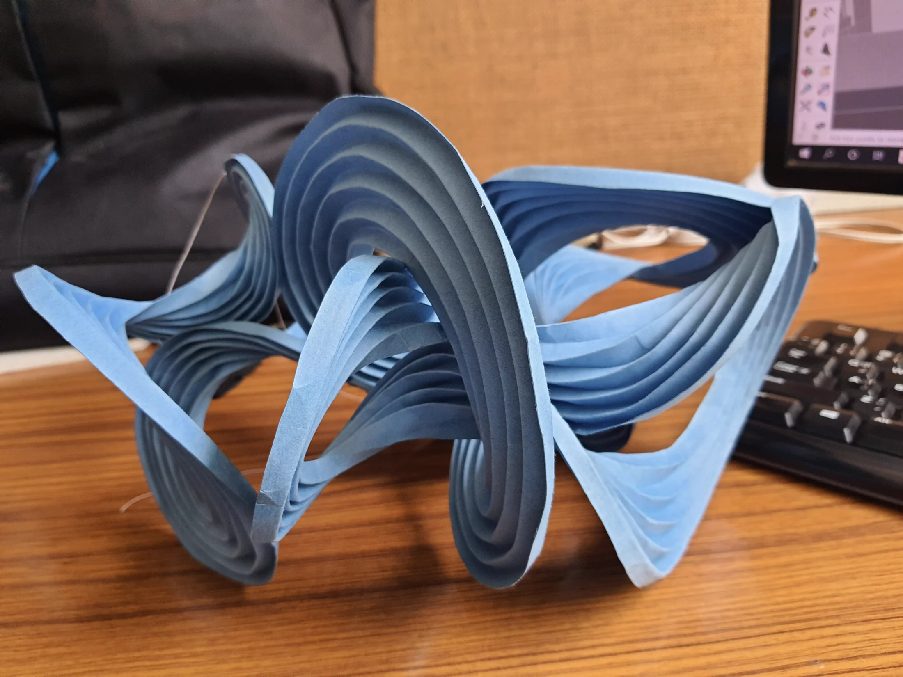
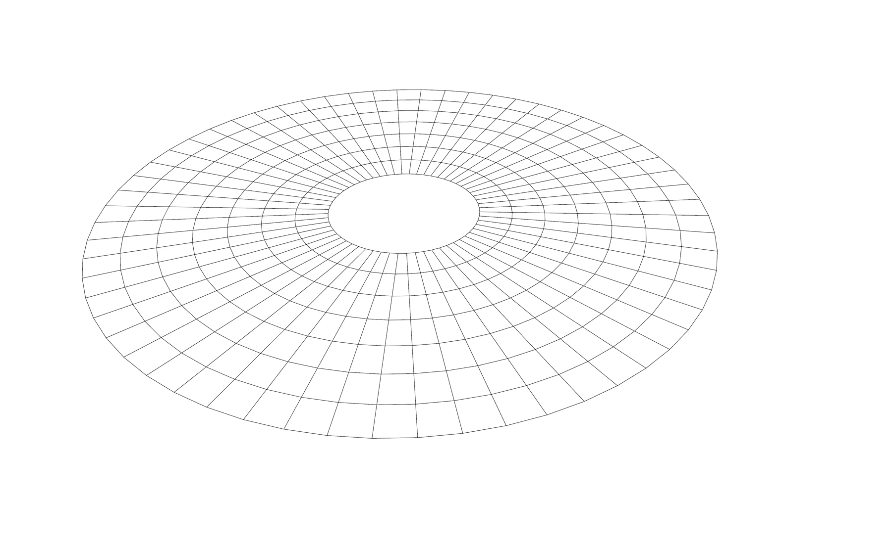
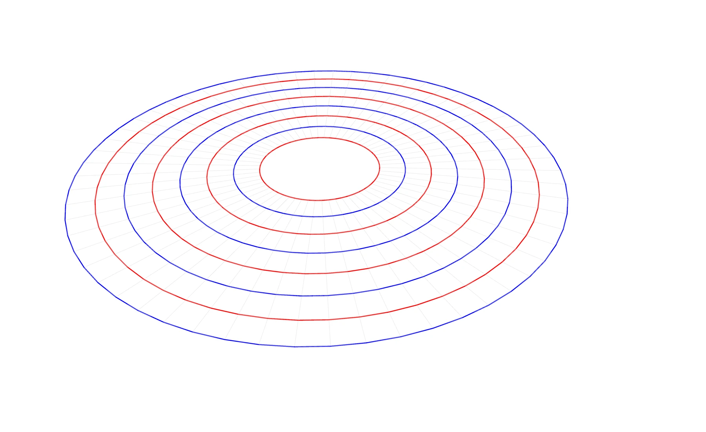
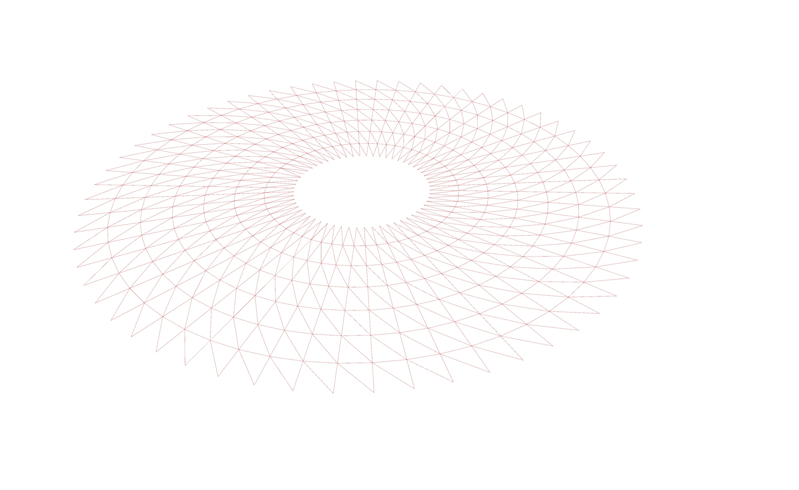
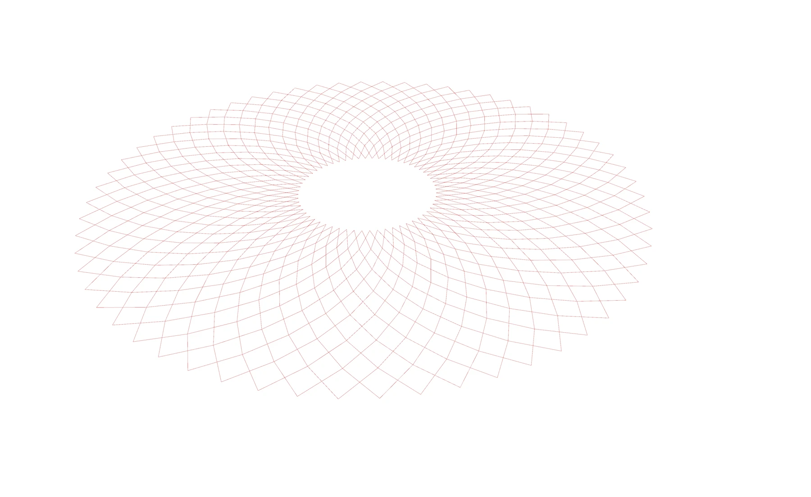
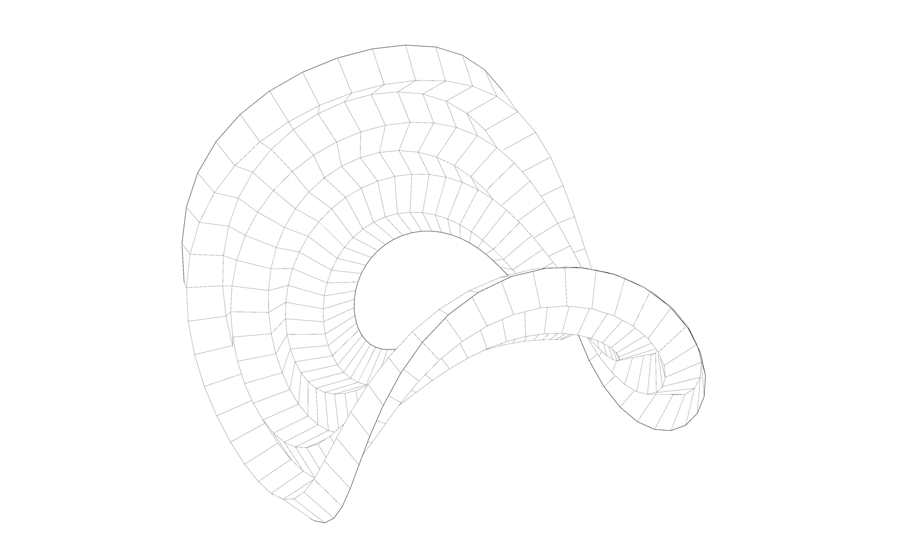
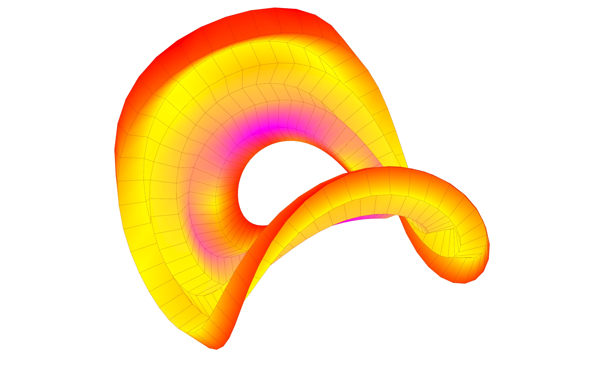

Independent study · 2025
Kangaroo Form-Finding
Turning a regular toroidal mesh into a family of folded, self-supporting geometries through physical simulation.

The study starts from a toroidal mesh whose topology stays constant while its geometric and physical inputs change. Rings in the mesh are classified as alternating mountain and valley folds, then Kangaroo solves the competing fold-angle and edge-length goals.
The result is a controlled design family rather than a single sculpted object. A small set of parameters produces flat rings, double loops, compact spirals and intertwined forms while preserving the same underlying mesh logic.
01 — Base topology
One mesh creates the entire design family.
A torus provides a closed quad mesh with continuous radial and circumferential directions. Inner radius, outer radius, the number of folds and segmentation density control its proportions before any force is applied.
Keeping the topology fixed makes each outcome comparable. Shape variation comes from changing the mesh dimensions and solver goals rather than rebuilding the geometry for every iteration.


02 — Fold logic
Geometric parameters define the field; physical goals deform it.
The Grasshopper definition identifies hinges from the mesh topology and assigns fold directions to them. Kangaroo then balances fold-angle targets with edge-length constraints, allowing the flat ring to move without losing its connected structure.
Because the goals compete, the solver does more than bend a preset surface. It searches for an equilibrium state, exposing how a small change in fold angle or strength can redirect the whole mesh.



03 — Simulation
The animation shows the parameter space, not only the final form.
The simulation records each equilibrium state together with its geometric inputs, fold parameters and curvature field. This makes it possible to read why one configuration remains shallow while another closes into an intertwined loop.
Mountain and valley diagrams track fold direction, while the colour map identifies where curvature concentrates as the mesh changes.

04 — Physical prototype
A hand-held model tests the continuity of the loops.
The prototype translates the digital result into a layered physical object. Handling it reveals relationships that remain difficult to read in a single screen view: openings align across the form, folds pass behind one another and the surface remains continuous through each loop.
The physical study also exposes the limits of the first translation, including local thickness, delicate junctions and the need to control how neighbouring layers meet.
- Topology
- A closed quad mesh preserves connectivity while its radii, fold count and subdivision change.
- Physics
- Kangaroo balances hinge rotation and edge constraints to calculate an equilibrium form.
- Evaluation
- Fold diagrams and curvature mapping make the behaviour of each iteration visible before physical translation.
Credits
Independent study and presentation by Naitik Sharma. Images, simulations and prototype documentation come from the project presentation.